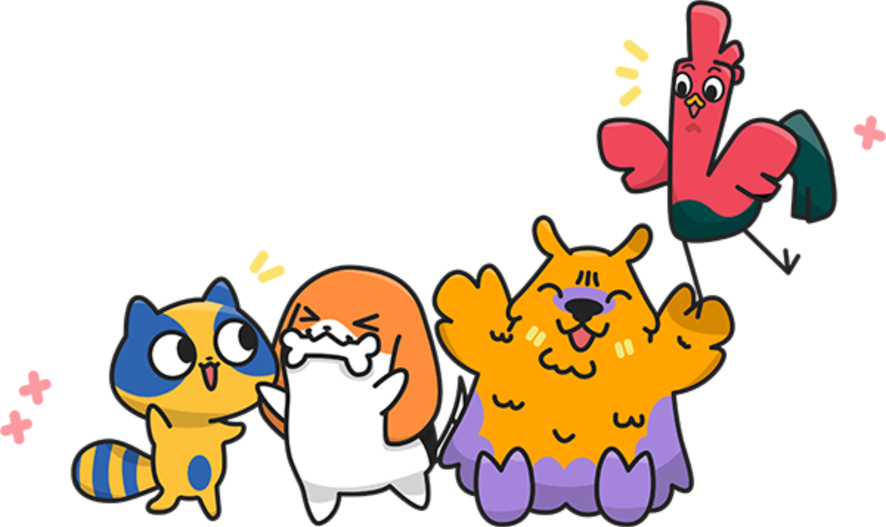

saweria.co
Terms and Condition
Kami, PT Harta Tahta Sukaria (“Saweria.co”), perseroan terbatas yang didirikan berdasarkan hukum di Negara Republik Indonesia, dalam Syarat dan Ketentuan Penggunaan Layanan ini bertindak sebagai Saweria.co. Halaman ini menjelaskan tentang syarat dan ketentuan penggunaan situs web dan platform www.saweria.co, baik sebagai pengunjung maupun pengguna (Anda). Seluruh pengunjung dan pengguna wajib membaca dan mencermati Syarat dan Ketentuan Penggunaan Penggunaan Layanan ini. Dengan mengunjungi dan/atau menggunakan Saweria.co, maka Anda dinyatakan telah memahami dan menyepakati semua Syarat dan Ketentuan Layanan di bawah ini. Apabila Anda tidak menyetujui salah satu, sebagian atau seluruh isi dari Syarat dan Ketentuan Layanan ini, maka Anda tidak diperkenankan untuk menggunakan layanan di Saweria.co. 1. Definisi 1. Kami dan/atau Saweria.co adalah PT Harta Tahta Sukaria, suatu perusahaan yang didirikan berdasarkan hukum Negara Republik Indonesia, beralamat di Jl. Jalan Wahid Hasyim No. 10D, RT.002/RW.007, Kelurahan Kebon Sirih, Kecamatan Menteng, Jakarta Pusat, 10340; 2. Layanan Saweria.co adalah situs platform yang mencakup layanan untuk memfasilitasi dan membantu Content Creator (sebagaimana didefinisikan dibawah ini) memonetisasi hasil karya-nya di platform video streaming pihak ketiga, dengan cara mendaftarkan dan meng-upload link pelayanan pembayaran di platform video streaming pihak ketiga ketika melakukan live streaming dari Content Creator. Dengan Layanan Saweria.co, Content Creator dapat memodifikasi halaman tersebut dengan gambar, teks, dan video dan menggunakan halaman link web tersebut untuk memfasilitasi penerimaan pendukungan donasi dan pesan dari Donatur. Saweria.co bukan merupakan Lembaga Jasa Keuangan Non-Bank maupun Institusi Finansial dalam bentuk apa pun; 3. Anda atau Pengguna atau User adalah badan hukum atau perorangan yang mendaftarkan dan menggunakan Layanan Saweria.co termasuk namun tidak terbatas pada setiap Content Creator maupun Donatur yang membuat akun dan mengakses platform Saweria.co atau menggunakan Layanan Saweria.co; 4. Content Creator adalah Pengguna dan/atau calon penerima donasi termasuk streamer dan/atau youtuber yang telah terdaftar dan memiliki halaman di Saweria.co atau menggunakan platform Saweria.co dengan cara apapun untuk menerima dukungan/donasi, menerima pesan dukungan, menampilkan karya, dan fitur lainnya pada halaman Content Creator; 5. Donatur adalah pendukung atau donatur, baik yang sudah terdaftar di Saweria.co dan memiliki akun atau yang belum memiliki akun. Donatur menggunakan situs Saweria.co untuk mendukung atau donasi dan menikmati karya yang ditawarkan oleh Content Creator; 6. Data Pribadi adalah data pribadi yang Pengguna berikan secara sukarela kepada Saweria.co melalui Platform Layanan Saweria.co termasuk data yang dihasilkan serta berkaitan dengan pemanfaatan Layanan Saweria.co; 7. Hak Kekayaan Intelektual adalah hak eksklusif yang diberikan atas sebuah karya yang timbul dari hasil olah pikir yang dituangkan dalam wujud yang nyata; 2. Hak dan Kewajiban User 1. Content Creator Content Creator bertanggung jawab penuh atas semua tulisan, gambar, video, tautan, dan konten lain yang Anda buat, upload, posting, atau tampilkan di Layanan Saweria.co. Adapun Hak dan Kewajiban bagi Content Creator dalam menggunakan Layanan Saweria.co diantaranya: * Content Creator harus memberikan informasi yang akurat dalam Layanan Saweria.co; * Content Creator harus sekurang-kurangnya berusia 18 tahun ketika melakukan proses pendaftaran di Layanan Saweria.co, atau telah memiliki izin dari orang tua atau wali yang bersangkutan untuk membuat akun; * Content Creator berhak menerima uang dari Donatur yang telah mendukung; * Content Creator bertanggung jawab atas keamanan akun dan segala hal yang terjadi pada akun Content Creator selama Content Creator tersebut sedang login; * Content Creator bertanggungjawab atas segala konten yang ditampilkan, diperlihatkan, diterbitkan atau di pertontonkan dalam Layanan Saweria.co. Setiap konten menjadi tanggungjawab Content Creator untuk tidak melanggar ketentuan hukum yang berlaku di Indonesia; * Content Creator wajib mempertimbangkan segala peraturan yang berlaku dalam menawarkan konten atau karya melalui Layanan Saweria.co, termasuk namun tidak terbatas pada, peraturan perundangan yang mengatur soal konten, informasi dan transmisi elektronik; * Content Creator tidak menggunakan Layanan Saweria.co untuk mengumpulkan dana untuk kepentingan politik, keperluan organisasi massa dengan afiliasi pada pihak pelanggar hukum, atau dengan niat melakukan tindakan melanggar hukum; * Content Creator bertanggung jawab atas seluruh konten yang diunggah pada halaman Content Creator. Penggunaan nama, brand, merek, logo yang ditambahkan oleh Content Creator sepenuhnya adalah tanggung jawab Content Creator; * Content Creator diperkenankan untuk mempromosikan hasil karya atau konten ke dalam platform lain; * Akun Content Creator tidak dapat diperjualbelikan atau dipindahtangankan; * Content Creator tidak boleh menggunakan Layanan Saweria.co untuk tujuan ilegal atau tidak sah yang dapat melanggar ketentuan hukum di Indonesia, termasuk namun tidak terbatas hanya pada hukum Hak Kekayaan Intelektual); * Content Creator tidak boleh mentransmisikan worm atau virus atau kode apa pun yang bersifat merusak. Pelanggaran atau pelanggaran terhadap salah satu Ketentuan ini akan mengakibatkan penghentian penggunaan Layanan Saweria.co; * Content Creator dengan ini menyetujui untuk Content Creator bertanggung jawab atas segala konten yang ditampilkan, diperlihatkan, diterbitkan atau dipertontonkan dalam Layanan Saweria.co. Setiap konten menjadi tanggung jawab Content Creator untuk tidak melanggar ketentuan hukum yang berlaku di Indonesia; * Content Creator menyetujui untuk tidak mereproduksi, menggandakan, menyalin, menjual, menjual kembali, atau mengeksploitasi setiap bagian dari Layanan Layanan Saweria.co, penggunaan Layanan Layanan Saweria.co, atau akses ke Layanan Saweria.co atau kontak apa pun yang tersedia, tanpa izin tertulis dari Saweria.co; * Kewajiban pajak yang timbul baik sekarang maupun dimasa yang akan datang, sepenuhnya menjadi tanggung jawab masing-masing pihak yang melakukan transaksi melalui penggunaan Layanan Saweria.co. Termasuk tanggung jawab untuk menilai, mengumpulkan, melaporkan atau mengirimkan informasi pajak keotoritas yang berwenang sesuai dengan ketentuan perpajakan yang berlaku di Republik Indonesia. 2. Donatur Adapun Hak dan Kewajiban bagi Donatur dalam menggunakan Layanan Saweria.co diantaranya; * Untuk memberikan dukungan kepada Content Creator, Donatur sekurang-kurangnya harus memberikan alamat email aktif dan nomor telepon aktif untuk kebutuhan proses transaksi; * Donatur dapat mendaftar sebagai pengguna dan membuat akun dengan memberikan data, termasuk namun tidak terbatas pada, nama, alamat email aktif, nomor telepon aktif dan alamat surat; * Donatur sekurang-kurangnya harus berumur 18 tahun atau mendapatkan izin dari orang tua atau wali yang bersangkutan ketika membuat akun; * Donatur wajib mengikuti segala peraturan yang berlaku, termasuk namun tidak terbatas pada, aturan mengenai konten, dan informasi dan transmisi elektronik; * Dengan memberikan donasi kepada Content Creator, Donatur setuju dengan metode pembayaran yang dipilih dan memberikan kuasa serta wewenang penuh kepada Saweria.co untuk menagih setiap transaksi. Biaya dan/atau dukungan yang diberikan donatur ini tidak dapat dikembalikan, tidak menguntungkan, dan atau dapat ditukar dan tidak dapat ditarik kembali atau dibebankan kembali. Anda mengakui bahwa Anda tidak menerima barang atau jasa sebagai imbalan atas donasi yang diberikan; * Layanan Saweria.co memungkinkan Donatur untuk mengirim donasi melalui pemroses pembayaran pihak ketiga. Saweria.co berhak untuk menambah atau menghapus donasi untuk pemroses pembayaran pihak ketiga ini setiap saat; * Kewajiban pajak sepenuhnya menjadi tanggung jawab Donatur yang melakukan transaksi melalui penggunaan Layanan Saweria.co. Termasuk tanggung jawab untuk menilai, mengumpulkan, melaporkan atau mengirimkan informasi pajak ke otoritas yang berwenang; 3. Hak Saweria.co Untuk dapat beroperasi secara efektif, memberikan perlindungan, keamanan, dan kenyamanan setiap Pengguna, Saweria.co perlu mengendalikan seutuhnya atas apa yang terjadi pada Layanan Saweria.co. Adapun hak dan kewajiban Saweria.co sebagai berikut: 1. Saweria.co dapat mengubah sebagian atau semua dari layanan maupun fungsi yang terdapat pada Layanan Saweria.co; 2. Saweria.co dapat menangguhkan atau menghentikan sebagian atau semua layanan pada Layanan Saweria.co; 3. Saweria.co dapat menghentikan, menangguhkan, membatasi atau menonaktifkan akses Pengguna sebagian atau semua pada Layanan Saweria.co; 4. Saweria.co dapat mengubah kriteria kelayakan untuk menggunakan Layanan Saweria.co; 5. Dalam hal terjadi perselisihan terkait dengan kepemilikan akun, Saweria.co berhak, kapan saja dan atas kebijakan sendiri, dan tanpa pemberitahuan kepada Pengguna untuk menentukan kepemilikan akun yang sah tersebut. Jika Saweria.co merasa bahwa Kami tidak dapat secara wajar menentukan pemilik yang sah, kami berhak untuk menangguhkan akun sampai pihak yang berselisih mencapai titik terang. Kami juga dapat meminta dokumen yang sekira dibutuhkan untuk membantu menentukan pemilik yang sah dari akun tersebut; 6. Saweria.co dapat mengubah biaya Layanan Saweria.co kapan saja dengan memberikan pemberitahuan sebelumnya melalui email yang terdaftar maupun notifikasi pada Layanan Saweria.co selambat-lambatnya 3x24 jam sebelum efektif perubahan biaya Layanan sebagaimana dimaksud; 4. Penggunaan Data Pribadi 1. Anda setuju bahwa Saweria.co dapat mengumpulkan, menyimpan atau menggunakan Data Pribadi yang Anda berikan sesuai dengan peraturan perundang-undangan yang berlaku; 2. Anda setuju bahwa Saweria.co juga memiliki hak untuk membagikan Data Pribadi kepada pihak pemerintah, otoritas resmi, dan/atau pihak lain yang bekerjasama secara sah dengan lembaga pemerintahan yang relevan sepanjang berkenaan dengan tindakan yang diatur dalam peraturan perundang-undangan, instruksi Lembaga pemerintahan yang relevan; 3. Saweria.co berkomitmen menggunakan Data Pribadi Anda hanya untuk kepentingan pemberian dan peningkatan kualitas Layanan; 4. Semua Data Pribadi Anda disimpan dengan aman oleh Saweria.co sesuai dengan ketentuan perlindungan data, otoritas yang berwenang, dan peraturan perundang-undangan di Republik Indonesia. Kami berupaya untuk memastikan bahwa setiap informasi yang dikirimkan oleh Pengguna terlindungi melalui sistem Layanan Saweria.co termasuk namun tidak terbatas pada dengan digunakannya teknologi SSL / TLS; 5. Pencairan Dana Donasi 1. User akan mendapatkan donasi dari 2 (dua) penyedia layanan pembayaran (“Payment Gateway”), yakni Midtrans dan Xendit; 2. Pencairan dana dapat dilakukan ke semua rekening bank di Indonesia menggunakan layanan Xendit; 3. Payment gateway memotong sebesar Rp 5.000,00 (lima ribu Rupiah) yang akan dibebankan ke User serta dapat berubah sewaktu-waktu karena terjadinya kesepakatan dengan Saweria.co yang dituangkan dalam bentuk perjanjian; 4. Proses pencairan dana memakan waktu selambat-lambatnya 3x24 jam dari permintaan pertama penarikan. Hal ini untuk mengantisipasi apabila ramainya transaksi dalam chanel pembayaran dari masing-masing channel pembayaran yang terdaftar di Saweria.co; 5. Pencairan dana sebaiknya tidak dilakukan di luar jam kerja normal (Senin-Jumat 08.00-20.00) untuk menghindari pending yang disebabkan oleh cut off time dari pihak bank yang bersangkutan. Jika pencairan dana menjadi lebih lama karena alasan di atas, maka pihak Saweria tidak dapat membantu untuk mempercepat proses tersebut; 6. User dapat mencairkan dana dari saldo akun setelah 3 hari kerja; 7. Saweria tidak bertanggung jawab dan tidak dapat membantu jika user memasukkan informasi rekening bank yang tidak benar dan dana berhasil terkirim ke rekening tersebut; 8. Pencairan dana yang telah berhasil tidak dapat digagalkan, dikembalikan, atau ditarik kembali; 6. Pembayaran dan Biaya Layanan 1. Saweria.co akan memotong paling sedikit Rp 150 (seratus lima puluh rupiah) dan paling besar 5% (lima persen) untuk setiap donasi dari Donatur yang masuk ke dalam Layanan Saweria.co atau 6% (enam persen) khusus untuk donasi yang masuk menggunakan OVO; Apabila penggunaan Layanan Saweria.co terjadi atas dasar perjanjian atau kontrak, maka akan dikenakan potongan sesuai dengan yang tertera di dalam perjanjian yang telah disepakati; 2. Biaya terasosiasi lainnya saat penarikan dana akan disesuaikan dengan kebijakan payment channel masing-masing yang tersedia pada Layanan Saweria.co; 3. Saweria.co hanya mengumpulkan biaya untuk donasi yang diterima lalu menyalurkan kembali. Biaya dapat berubah tanpa pemberitahuan sebelumnya, itu adalah tanggung jawab User sebagai pengguna untuk tetap diperbarui tentang Biaya dan perubahan pada Biaya. Saat menerima donasi, Anda bertanggung jawab atas tagihan balik atau perselisihan yang mungkin terjadi setelahnya sehubungan dengan transaksi tersebut; 4. Pengguna bersedia untuk membayar semua biaya yang dinilai oleh Saweria.co perlu untuk keberlangsungan penyediaan layanan dan pemroses pembayaran yang aman dan lancar; 7. Hak Kekayaan Intelektual 1. Ketika User mengunggah ke Layanan Saweria.co dengan meng-upload atau posting konten, Anda memberikan Saweria.co hak non-eksklusif, di seluruh dunia, secara terus-menerus, tidak dapat dibatalkan, bebas royalti, disublisensikan (melalui beberapa tingkatan) hak untuk melaksanakan setiap dan semua hak cipta, publisitas, merek dagang, hak basis data dan hak kekayaan intelektual yang Anda miliki dalam konten, di media manapun yang dikenal sekarang atau di masa depan. Selanjutnya, untuk sepenuhnya diizinkan oleh hukum yang berlaku, Anda mengesampingkan hak moral dan berjanji untuk tidak menuntut hak-hak tersebut terhadap Saweria.co; 2. Pengguna menjamin bahwa tidak melanggar hak kekayaan intelektual dalam mengunggah konten Pengguna ke dalam Layanan Saweria.co. Setiap Pengguna dengan ini bertanggung jawab secara pribadi atas pelanggaran hak kekayaan intelektual dalam mengunggah konten di Layanan Saweria.co; 3. Kami menjunjung tinggi perlindungan hak kekayaan intelektual setiap Content Creator. Maka dari itu, Content Creator harus menjamin bahwa semua karya atau konten yang diunggah di Layanan Saweria.co dan/atau yang disokong oleh pendanaan melalui Layanan Saweria.co, sepenuhnya adalah hak kekayaan intelektual milik Content Creator, dan/atau telah mendapatkan izin jelas dan tertulis dari pemilik konten/karya; 4. Saweria.co berhak menampilkan, mendistribusikan dan menyebarkan konten dari Content Creator yang dituliskan pada aplikasi Saweria.co untuk keperluan promosi Content Creator, promosi situs Saweria.co, serta untuk mempergunakan demi keperluan promosi, memberpaiki, menjaga keamanan Layanan Saweria.co; 5. Saat mengakses atau menggunakan Layanan Saweria.co, Anda setuju untuk mematuhi hukum dan menghormati hak kekayaan intelektual orang lain. Penggunaan atas Layanan Saweria.co ini setiap saat diatur oleh dan tunduk pada undang-undang tentang hak cipta, merek dagang, paten, dan rahasia dagang serta penggunaan kekayaan intelektual lainnya; 6. Anda setuju untuk tidak mengunggah, mengunduh, menampilkan, melakukan, mengirimkan, atau mendistribusikan informasi atau konten apa pun yang melanggar hak cipta, merek dagang, paten, rahasia dagang pihak lain, atau kekayaan intelektual atau hak kepemilikan lainnya; 7. Anda setuju untuk mematuhi undang-undang tentang hak cipta, merek dagang, paten, dan kepemilikan rahasia dagang dan penggunaan kekayaan intelektual, dan Anda akan bertanggung jawab penuh atas segala pelanggaran hukum apapun dan atas segala pelanggaran hak kekayaan intelektual apa pun yang disebabkan oleh konten yang Anda berikan dengan memposting, atau mentransmisikan, atau yang disediakan atau dikirimkan menggunakan nama pengguna atau ID pengguna Anda. Beban membuktikan bahwa Konten apa pun tidak melanggar undang-undang atau hak kekayaan intelektual sepenuhnya ada pada Pengguna; 8. Semua Konten dalam Layanan Saweria.co, seperti teks, grafik, logo, audio dan/atau media video, unduhan digital, kompilasi data, dan perangkat lunak, adalah milik Saweria.co dan dilindungi oleh hukum yang berlaku di Negara Kesatuan Republik Indonesia; 8. Aplikasi, Situs, dan Konten Pihak Ketiga 1. Saweria.co dapat memberikan tautan ke situs pihak ketiga lainnya, atau situs pihak ketiga dapat dimasukkan dalam Aplikasi. Beberapa situs ini mungkin mengenakan biaya terpisah, yang tidak termasuk dalam dan di samping biaya termasuk dalam Layanan Saweria.co; 2. Segala biaya atau kewajiban yang timbul dari penggunaan layanan pihak ketiga baik melalui aplikasi, situs dan konten yang ditampilkan di Layanan Saweria.co merupakan tanggung jawab Anda sepenuhnya. Saweria.co tidak secara khusus membuat pernyataan atau jaminan, baik tersurat maupun tersirat, mengenai situs pihak ketiga mana pun; 3. Saweria.co tidak membuat pernyataan atau jaminan bahwa layanan atau langganan apa pun yang ditawarkan melalui vendor pihak ketiga dan Aplikasi tidak akan berubah atau ditangguhkan atau dihentikan. Sehubungan dengan semua Aplikasi dan Konten serta Layanan yang tidak dikarang oleh Saweria.co, kami tidak menyaring konten pihak ketiga yang tersedia di berbagai sumber lain yang tersedia. Saweria.co tidak bertanggung jawab atau berkewajiban atas konten pihak ketiga tersebut; 9. Larangan User dengan mengakses Layanan Saweria.co ini menyatakan setuju untuk tidak melakukan kegiatan-kegiatan sebagaimana dijelaskan dibawah ini: 1. Mengirimkan pesan yang melanggar hukum (menurut peraturan perundangan yang berlaku) kepada atau di seluruh Platform, atau pesan yang mencerminkan kegiatan yang melanggar hukum; 2. Mengirimkan, mengunggah atau menyediakan pesan yang mencantumkan materi yang dapat dianggap mengandung hal yang merugikan, amoral, pornografi, hal yang tidak patut, hal yang menyinggung, bersifat kekerasan, penganiayaan, melanggar kesopanan, rasisme, diskriminasi, penghinaan, ancaman, pelecehan, kebencian dan hal lain yang tidak patut dan melanggar hukum Indonesia; 3. Mengirimkan atau menyediakan hubungan kepada, informasi dan pesan yang mengandung materi yang menghina, mencemarkan nama baik seseorang atau suatu pihak, dan informasi yang dilarang oleh Hukum Indonesia; 4. Mengirimkan pesan apapun yang melanggar atau merugikan setiap hak atas kekayaan intelektual atau hak lain dari setiap badan atau orang, termasuk tetapi tidak terbatas pada hak cipta, paten, merek dagang, hukum yang mengatur rahasia dagang, hak kerahasiaan pribadi atau publikasi; 5. Berpura-pura menjadi orang atau badan lain, atau menyatakan dengan tidak benar mengenai hubungan Pengguna dengan seseorang atau suatu badan, atau menggunakan identitas palsu jika tujuannya adalah untuk menyesatkan, menipu atau mengelabui pihak lain; 6. Menggunakan Layanan Saweria.co dengan cara apapun yang dapat merusak, melumpuhkan, terlalu membebani, atau merugikan atau mengganggu penggunaan Layanan Saweria.co atau peralatan komputer pengguna lainnya, atau menyebabkan kerusakan, gangguan atau membatasi fungsi dari setiap perangkat lunak, perangkat keras atau peralatan telekomunikasi; 7. Pengguna dilarang terlibat dalam kegiatan berikut, atau membantu orang lain dalam terlibat dalam kegiatan berikut, dalam menggunakan Layanan Saweria.co: * Terlibat dalam setiap praktik penipuan yang ditujukan untuk memanipulasi Search Engine Results Page (“SERP”) organik atau menggunakan teknik Search Engine Optimization (“SEO”) yang dianggap bertentangan dengan pedoman mesin pencari yang lazim. Praktek SEO yang dianggap tidak etis, atau Black Hat atau spamdexing, termasuk tetapi tidak terbatas pada cloaking, metadata dan title tags, content scraping, link schemes, Google bombs, keyword stuffing, hidden text dan links, doorway dan cloaked pages, link farming atau schemes, blog comment spam, dan lain-lain; * Mengancam, menguntit, menipu orang lain, atau menghasut, melecehkan, atau mengadvokasi pelecehan orang lain, atau mengganggu penggunaan pengguna lain atas Situs; * Menggunakan Layanan Saweria.co dengan cara yang dapat menimbulkan konflik kepentingan; * Menggunakan Situs untuk mempromosikan kefanatikan atau diskriminasi; * Meminta informasi pribadi dari anak di bawah umur atau untuk menyakiti atau mengancam untuk menyebabkan kerugian kepada anak di bawah umur; * Menggunakan untuk tujuan komersial atau promosi, mengiklankan atau mengumpulkan dana atau meminta barang atau jasa, menampilkan iklan komersial yang tidak sah tanpa izin, atau menerima pembayaran atau apa pun yang bernilai dari orang ketiga sebagai imbalan Anda melakukan aktivitas komersial melalui penggunaan yang tidak sah atau tidak diizinkan atas nama orang itu, seperti menempatkan konten komersial dalam ulasan produk, menempatkan tautan ke situs yang tidak diotorisasi oleh Saweria.co untuk ditampilkan pada Layanan Saweria.co, menempatkan tautan ke blog atau forum dengan tujuan komersial, atau berupaya mengirim pesan atau iklan dengan tujuan komersial; * Terlibat dalam kegiatan kriminal atau menyiksa, termasuk, tetapi tidak terbatas pada, penipuan, pelecehan, pencemaran nama baik, penguntit, spamming, skimming, pengiriman virus atau file berbahaya lainnya, pelanggaran hak cipta, atau pencurian rahasia dagang; * Mengakses konten atau data yang tidak dimaksudkan untuk Anda, atau masuk ke server atau akun yang tidak Anda akses; * Mencoba untuk menyelidiki, memindai, atau menguji kerentanan platform atau sistem atau jaringan terkait, atau untuk melanggar tindakan keamanan atau otentikasi tanpa otorisasi yang tepat, termasuk mengelak atau memodifikasi, berusaha mengelak atau memodifikasi, mencoba mendorong atau membantu orang lain dalam menghindari atau memodifikasi teknologi atau perangkat lunak keamanan apa pun yang merupakan bagian dari Layanan Saweria.co; * Memalsukan termasuk namun tidak terbatas pada header paket TCP / IP atau bagian mana pun dari informasi header dalam email apa pun atau dalam postingan apa pun; 10. Penafsiran dan Pembatasan (Disclaimer) 1. Kami mengusahakan keakuratan informasi dari Layanan Saweria.co ini. Namun demikian, informasi yang ada pada Platform ini kami sediakan “Sebagaimana Adanya”, dan Kami tidak memberikan jaminan atau mewakili apapun terhadap informasi dalam Layanan Saweria.co ini.; 2. Kami tidak menjamin Layanan Saweria.co ini selalu tersedia dan memenuhi kebutuhan Anda, dan juga kami tidak menjamin bila terjadi gangguan akses, penundaan, kegagalan, atau hilangnya dari informasi yang dikirimkan; 3. Kami tidak bertanggung jawab atas kerusakan atau kerugian apapun termasuk namun tidak terbatas terhadap kerugian langsung, tidak langsung, konsekuensial, khusus, insidental, atau kerusakan yang ditangguhkan atau disebabkan oleh Platform atau Konten atau lainnya (termasuk namun tidak terbatas kerusakan yang berhubungan dengan kelalaian); 4. Apabila sewaktu - waktu terjadi terjadi suatu keadaan kahar, maka Saweria.co dilindungi dan dibebaskan dari segala bentuk kewajiban. Keadaan kahar adalah suatu peristiwa yang terjadi di luar kendali dari Kami, dan dapat mencakup, namun tidak terbatas pada, bencana alam, kondisi cuaca, kebakaran, insiden nuklir, getaran elektromagnetik, tindakan teroris, kerusuhan, perang, serangan yang menyebabkan kebakaran, huru-hara, pemberontakan, kekerasan bersenjata dalam bentuk apapun, sengketa perburuhan, lock-out, pemogokan, kekurangan, tindakan atau larangan pemerintah, pencurian, kepailitan, karantina, epidemi, pandemi, rusaknya mesin, terputusnya atau gangguan jaringan atau sistem, terputusnya koneksi internet dan komunikasi, serangan siber (cyber attack) terhadap server dan Platform, hacking, cracking, dan hal lain yang dapat mempengaruhi kinerja sistem elektronik Saweria.co; 11. Hukum yang Berlaku Syarat dan Ketentuan ini ditetapkan oleh Saweria.co ditafsirkan sesuai hukum Republik Indonesia. Dalam hal terjadinya sengketa yang timbul sehubungan dengan penggunaan Layanan, Para Pihak sepakat untuk melakukan permusyawarahan terlebih dahulu. Apabila dalam waktu maksimal 30 (tiga puluh) hari kerja Para Pihak masih tidak mencapai kata mufakat maka Para Pihak sepakat untuk memilih domisili hukum yang tetap secara non-eksklusif dengan kedudukan tetap di Kantor Kepaniteraan Pengadilan Jakarta Pusat; 12. Pernyataan dan Jaminan Selama Anda memiliki Akun dan menggunakan Saweria.co maka Syarat dan Ketentuan ini berlaku secara sah dan Anda menyatakan dan menjamin bahwa: 1. Anda adalah orang perorangan Warga Negara Indonesia yang berusia sekurang-kurangnya 18 (delapan belas) tahun yang cakap dan berwenang menurut hukum Republik Indonesia untuk menandatangani dan mengikatkan diri pada suatu perjanjian. Jika tidak, Saweria.co berhak untuk sewaktu-waktu membekukan Akun Anda dan melakukan setiap tindakan yang dipandang perlu olehnya; 2. Setiap Data Pribadi, informasi, dan dokumen yang diberikan kepada Saweria.co adalah benar, akurat, lengkap, dan masih berlaku, apabila di kemudian hari ternyata pernyataan ini tidak benar dan mengakibatkan kerugian, maka Anda dengan ini membebaskan Saweria.co atas segala gugatan dan atau tuntutan apabila di kemudian hari terdapat ketidaksesuaian; 3. Anda dengan ini menyatakan untuk melepaskan, membebaskan dan mengganti kerugian Saweria.co terhadap setiap dan semua tuntutan atau pertanggungjawaban yang diajukan oleh pihak ketiga terkait dengan penggunaan Layanan Saweria.co, Platform, dan Syarat dan Ketentuan ini dan pelaksanaannya yang diberikan ke rekening Anda; 4. Anda telah membaca dan mengerti seluruh isi dari Syarat dan Ketentuan ini dan setuju bahwa Syarat dan Ketentuan ini berlaku sebagai suatu Kontrak Elektronik yang sah, mengikat dan menyatakan tidak akan memulai atau melakukan tuntutan atau keberatan apapun sehubungan dengan, atau menyangkal keberadaan atau keabsahan Syarat dan Ketentuan ini (berikut dengan setiap perubahannya dari waktu ke waktu); 13. Pengakhiran Apabila Pengguna melanggar Syarat Dan Ketentuan Penggunaan Layanan ini, Saweria.co dapat memutuskan sepihak dan melakukan tindakan termasuk namun tidak terbatas kepada sebagai berikut ini: 1. Penarikan sementara atau permanen terhadap hak Anda untuk menggunakan Layanan Saweria.co dan setiap konten yang diunggah oleh Anda ke dalam Layanan Saweria.co; 2. Peringatan dan upaya hukum terhadap Anda untuk penggantian semua biaya atas kerugian yang disebabkan oleh pelanggaran Syarat Dan Ketentuan Penggunaan Layanan ini; 3. Pengungkapan informasi tersebut kepada pihak yang berwenang; 14. Pengaduan Konsumen Apabila terdapat saran, keluhan dan/atau keberatan atas Layanan Saweria.co, mohon untuk menghubungi kami di help@saweria.co atau dapat mengacu kepada ketentuan layanan pengaduan pengguna; 15. Pernyataan Anti Pencucian Uang dan Pencegahan Pendanaan Terorisme (“APU PPT”) Dalam menjalankan usahanya Saweria.co tunduk pada peraturan APU PPT di Indonesia, baik yang dikeluarkan pemerintah maupun Otoritas Jasa Keuangan (“OJK”) yaitu sebagai berikut: 1. Saweria.co tidak pernah melakukan tindakan-tindakan yang dengan sengaja menyediakan, mengumpulkan dan memberikan, dana, baik langsung maupun tidak langsung, dengan maksud digunakan seluruhnya atau sebagian untuk melakukan Tindak Pidana Terorisme, organisasi teroris, atau teroris; 2. Saweria.co tidak pernah melakukan tindakan yang dapat dikategorikan sebagai permufakatan jahat, percobaan, atau pembantuan untuk melakukan tindak pidana pendanaan terorisme; 3. Saweria.co tidak pernah melakukan tindakan yang dapat dikategorikan dengan sengaja merencanakan, mengorganisasikan, atau menggerakkan orang lain untuk melakukan tindak pidana permufakatan jahat, percobaan, atau pembantuan untuk melakukan tindak pidana pendanaan terorisme; 4. Saweria.co tidak pernah melakukan tindakan untuk menyembunyikan atau menyamarkan asal usul, sumber, lokasi, peruntukan, pengalihan hak-hak, atau kepemilikan yang sebenarnya atas Harta Kekayaan yang diketahuinya atau patut diduganya merupakan hasil tindak pidana pencucian uang;